Takhassus fi al-Ifta
Jamia Arabia Robiul Ulum, Dhaka
Islamic Educator, Da‘i, Writer, Imam & Khateeb based in Bangladesh. Dedicated to Qur’an education, Islamic learning, student guidance, and communicating Islamic teachings with wisdom and clarity.
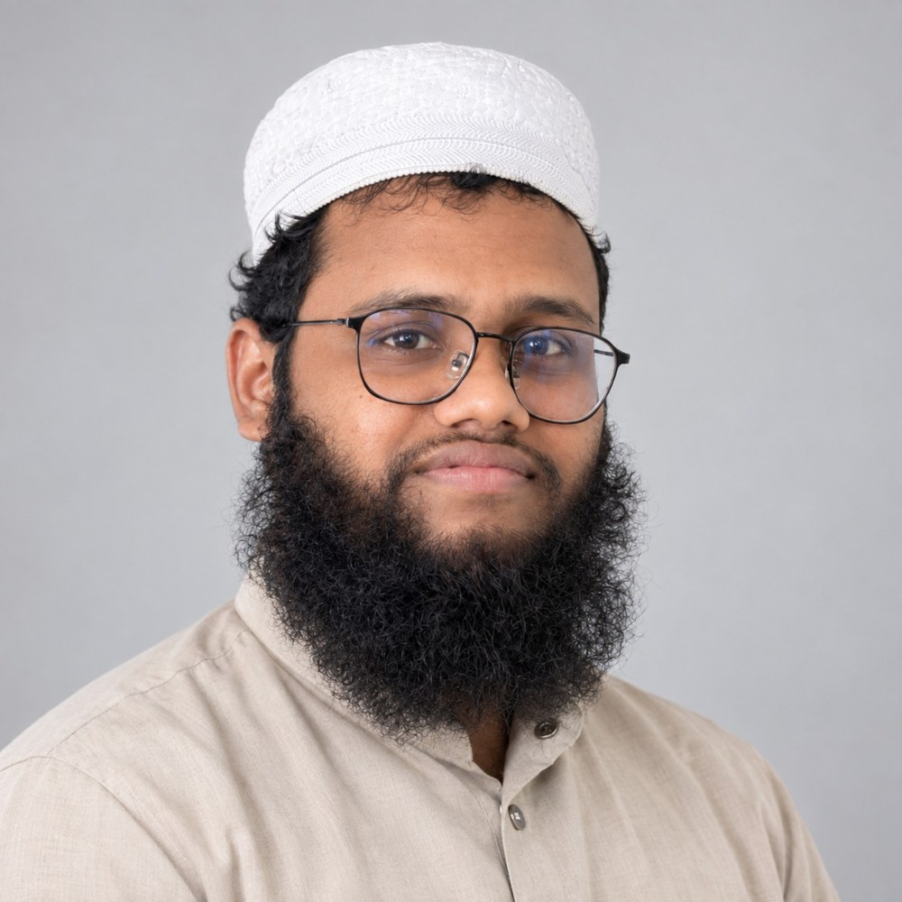
A concise professional introduction based on my education and experience.
I am an Islamic educator and Da‘i with a background in Dawra-e-Hadith, Takhassus fi al-Ifta, Qur’anic studies, and Islamic Dawah. My work includes Islamic education, Qur’an and Tajweed teaching, student guidance, public speaking, Khutbah and Imamat.
I am currently associated with As-Sunnah Foundation in Bangladesh, serving in the English Language Program with responsibilities related to Islamic education and student guidance. I have experience working with both general-educated and Islamic-educated learners, and I am interested in explaining Islamic teachings in ways that are clear, thoughtful and relevant to contemporary questions.
This website brings together my professional profile, qualifications, educational activities, media, writing and public contact links.
Qualifications and training, with selected certificates below.
Jamia Arabia Robiul Ulum, Dhaka
As-Sunnah Foundation
Jamia Rahmania Arabia, Mohammadpur, Dhaka
Abdullah Bin Omor (RA) Madrasah
Noorani Training, Public Speaking, English Language, Basic Computer, Bengali Language & Literature.
Qur’an & Tajweed teaching, Islamic Studies & Hadith, Dawah, Khutbah, Imamat, counselling, coordination, writing and digital learning.
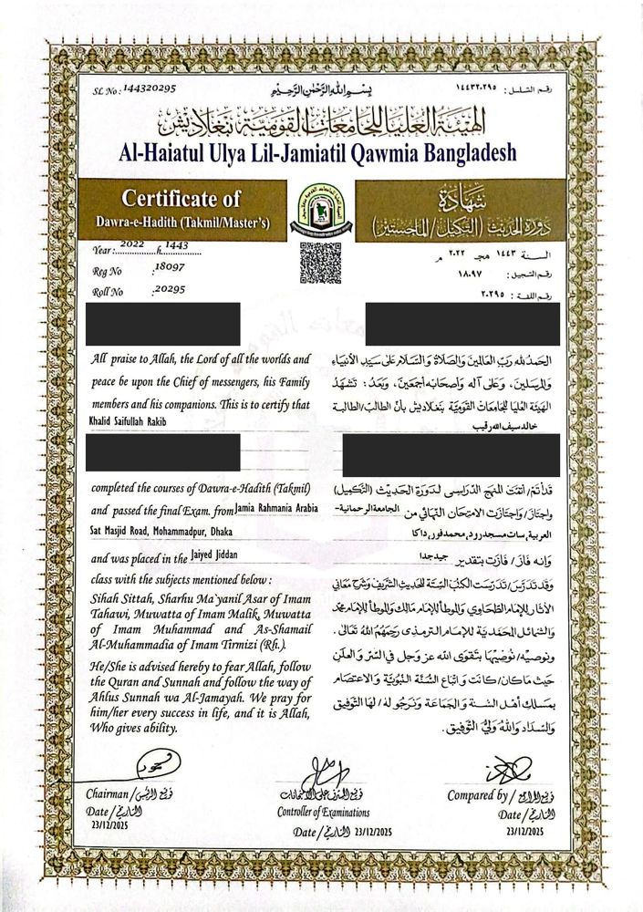
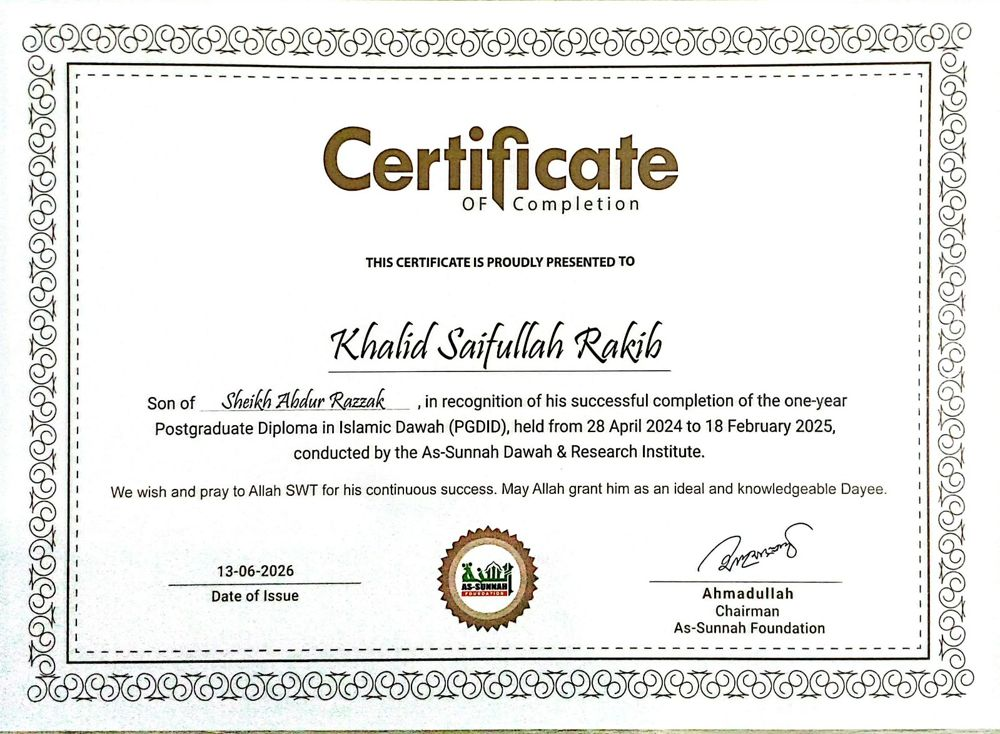
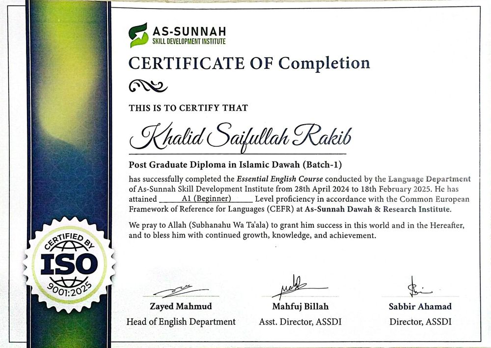
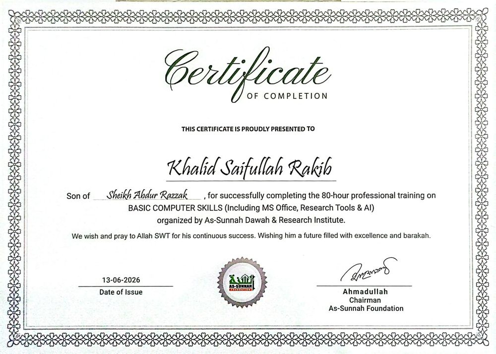
Islamic Educator & Dawah-related Responsibilities
Serving in the English Language Program; teaching Qur’an, Tajweed, Hadith, Islamic Studies and Salah-related knowledge; guiding students; participating in Dawah, counselling, Khutbah, Imamat and educational coordination.
Arabic Teacher
Taught Arabic and supported students in their Islamic educational development.
Teaching experience in Islamic educational institutions and involvement in Islamic education and Dawah activities.
Classes, talks and educational activities.
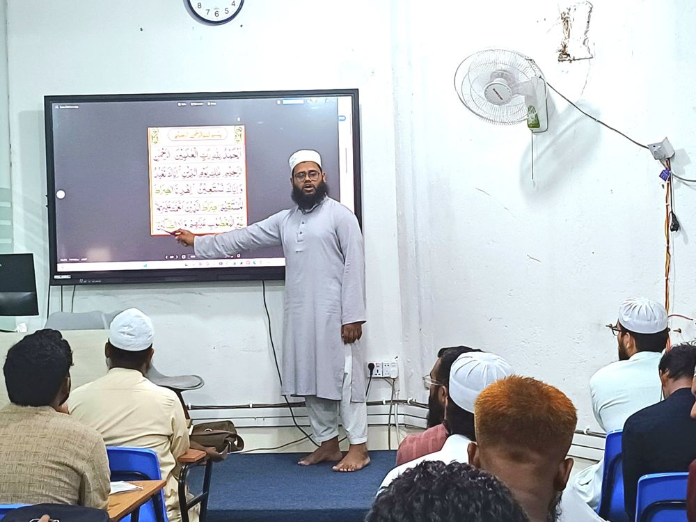
Teaching Qur’an recitation to students.
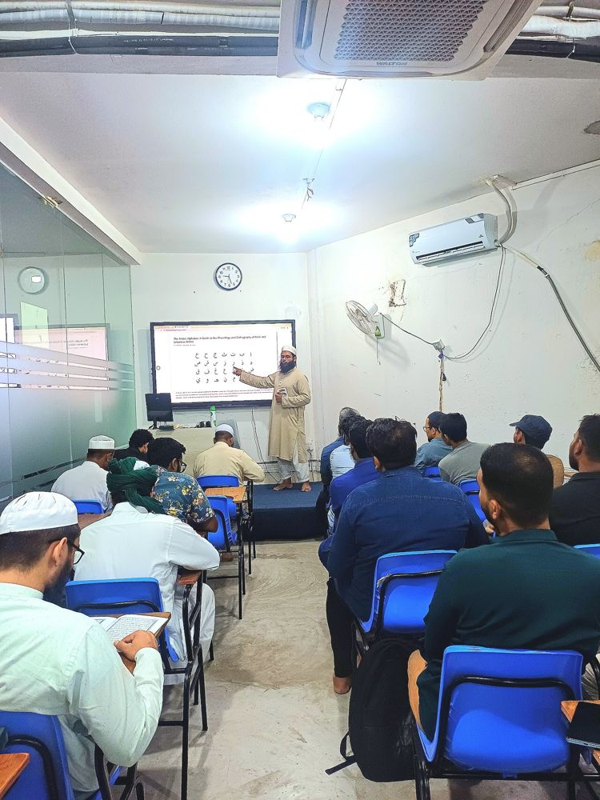
Teaching the Arabic alphabet and pronunciation.
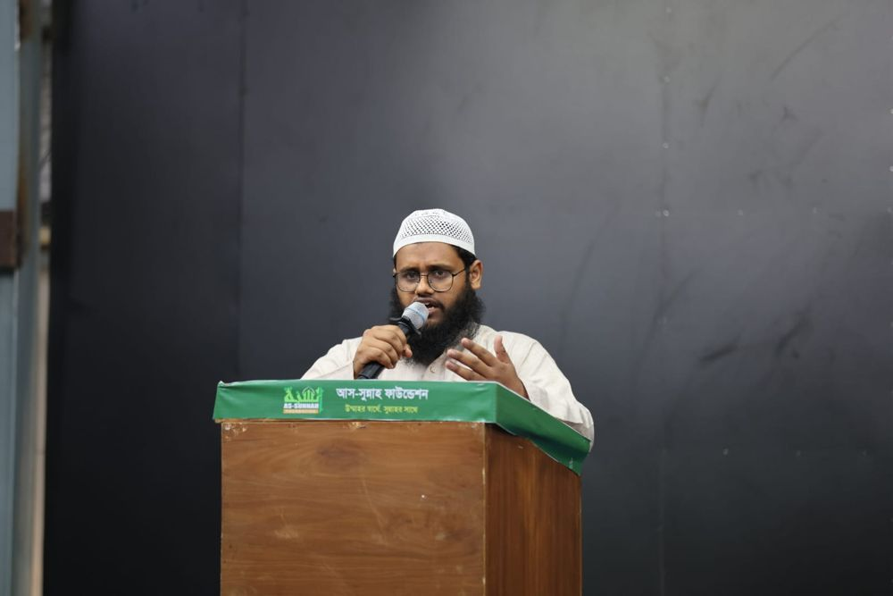
Addressing an As-Sunnah Foundation programme.
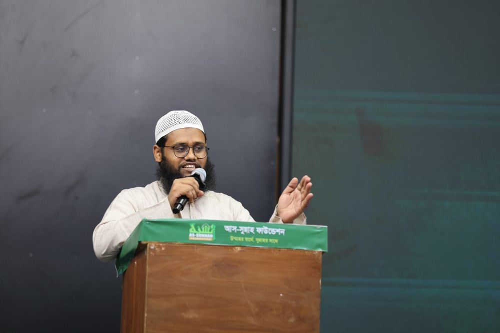
Speaking at an educational event.
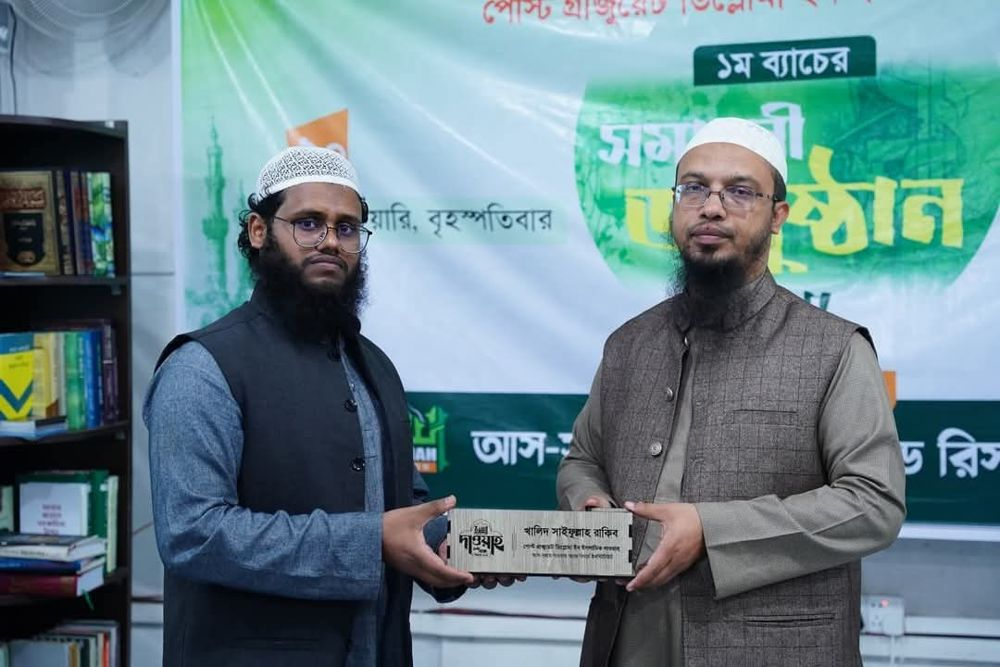
Receiving a commemorative crest at the closing ceremony of Batch 1, Post Graduate Diploma in Islamic Dawah.
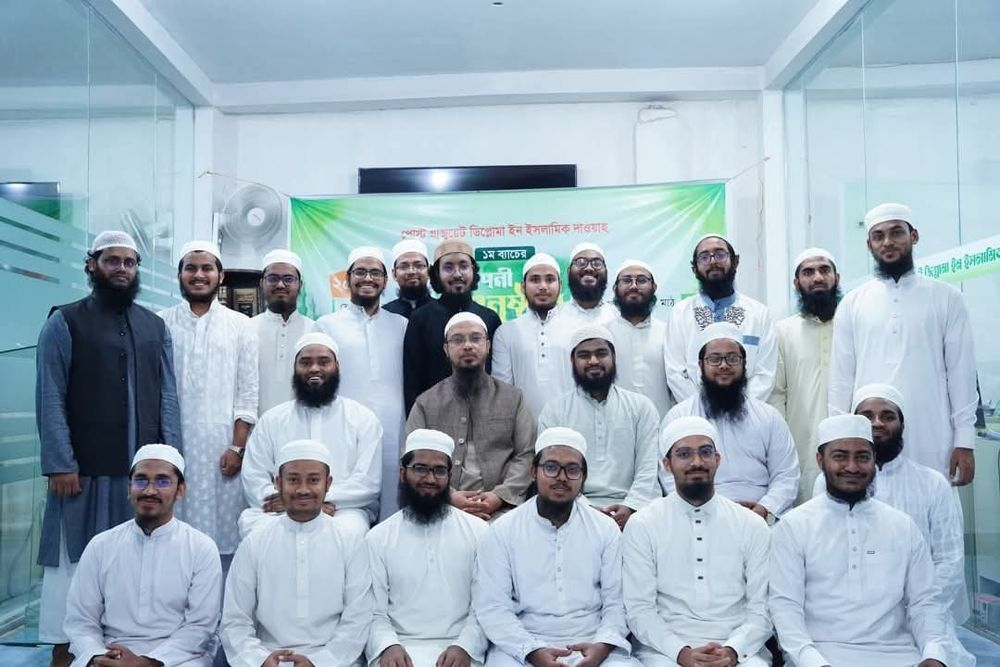
With the Batch 1 Islamic Dawah diploma cohort.
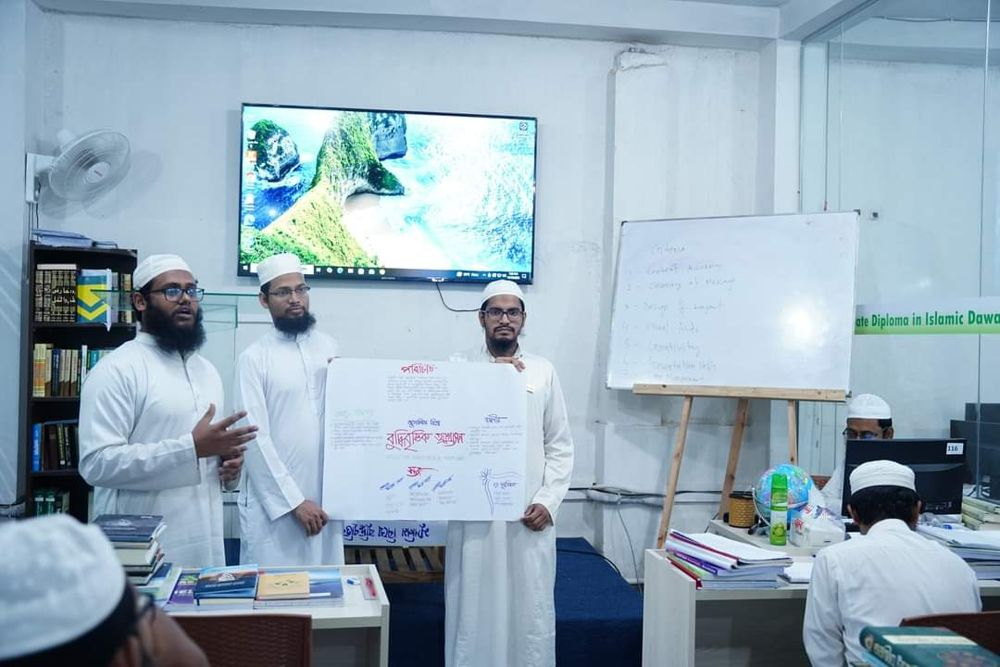
A presentation session during the Dawah diploma programme.
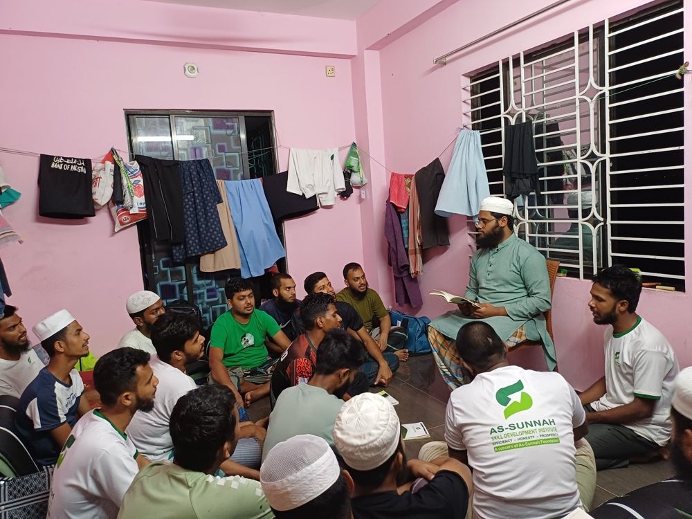
Guiding students in a group learning session.
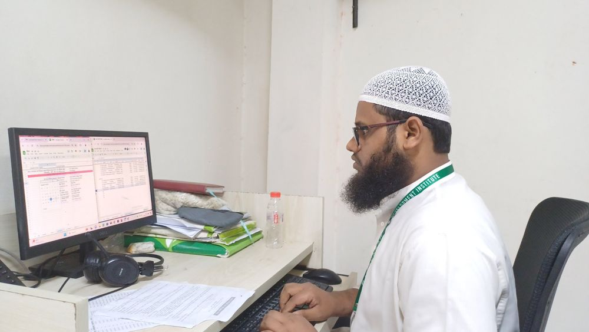
Institutional coordination and administrative work.
Use this section for original articles, educational notes, book projects and downloadable resources.
Add a short summary of an article and link to the full publication.
Share teaching notes, lesson resources or carefully referenced educational material.
Introduce your published or completed works. Mark works in progress clearly.
For relevant educational, speaking and professional enquiries, please use the contact details below.
Email
khaledsaifullahrakib95@gmail.com
Location
Dhaka, Bangladesh
Connect across platforms
Official public profile.